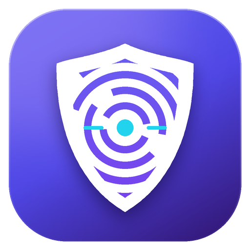

Run unlimited isolated browser profiles at the same time. Each profile gets a unique fingerprint and its own cookies and proxy, so every profile looks like a different device. A free alternative to Multilogin, GoLogin and AdsPower.
Download for Windows View on GitHubFree · Windows 10/11 64-bit · No Python or extra software needed
Cookies, logins, history and extensions are kept separate for every profile.
Canvas, WebGL, audio, screen resolution, CPU, RAM, language and timezone per profile.
HTTP, HTTPS, SOCKS4 and SOCKS5, including SOCKS5 with username and password.
Timezone, language and GPS location match the proxy IP's country.
Your real IP address is not exposed through WebRTC.
Paste a proxy list and get one profile with a random fingerprint for each proxy.
Social media, e-commerce and ad accounts that stay unlinked.
Separate identities for every campaign or wallet.
Test websites with different fingerprints and IP addresses.
Seeing "Windows protected your PC"? Click More info → Run anyway. The installer is not yet code-signed.
A browser that gives every profile its own fingerprint, cookies and proxy, so websites cannot tell that multiple profiles belong to the same person or computer.
Yes. There are no profile limits, subscriptions or accounts.
No. It uses Google Chrome if installed, otherwise Microsoft Edge, which is built into Windows 10 and 11.
HTTP, HTTPS, SOCKS4 and SOCKS5, with or without username and password.
Locally on your computer. Proxy passwords are encrypted with Windows DPAPI.